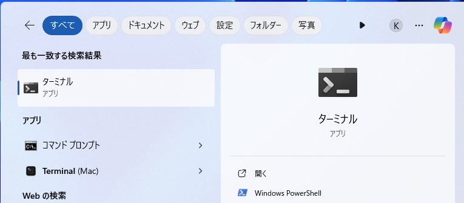
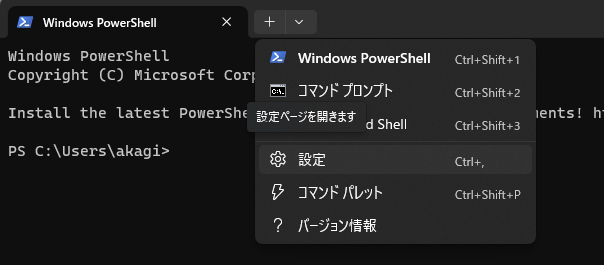
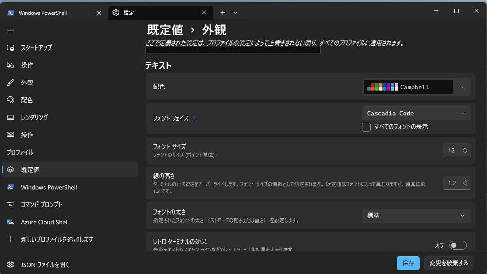

代数プログラミング入門 Ch2 環境構築
資料
プログラミング用の設定
本章では,実際にHaskellを利用したプログラミングを体験してみます. しかし,Haskellを使う前に,一般的にプログラミングを行うために必要となる準備をしておきましょう.
テキストエディタのインストール
IMEの設定
プログラムは基本的に ｢半角英数字｣ で記述されます. プログラム中に全角の空白や記号が交じるとエラーの原因となる場合があります. そのため,プログラムを書く前に,そういったミスが起きないようにIMEの設定をしましょう.
タスクトレーからIMEの設定ができます．基本的に記号をすべて半角に設定しましょう（スペースは必ず半角にしましょう）．特に，句読点をコンマとピリオドに変更しましょう．

CLIの基本操作
プログラムの開発環境にはマウスなどでクリックして操作するGUI(Graphical User Interface)をもったIDE(Integrated Development Environment)などもありますが,基本的には文字によってコンピュータに命令を送るCLI(Command Line Interface)を利用します. 映画やマンガなどで,ハッカーが黒い画面に文字を打っているあれのことです.
コンピュータのオペレーティングシステムとユーザー間のCLIを提供するプログラムをShellといい,Windowsでは,Command PromptやPowerShellなどがあります. MacなどのUnix系では,Bashやzshがあります. いずれも (Windows) Terminalというソフトウェアを介して利用します.
本講義では環境や好みによって好きな環境で開発して構いませんが,ここでは,PowerShellの利用法を解説します.
Windows11の検索バーで Terminalと検索して,出てきた Terminalをクリックしましょう.

自動的にWindows PowerShellが起動します. 立ち上がった,黒色の画面に文字でコマンド(命令)を入力して,コンピュータを操作します.

エンコーディング
実際にコマンドを入力する前に, 初心者がつまづきやすいポイントとして,Windowsのエンコーディングについて解説します.
PCは人間の使う文字（日本語，英語など）が理解できません.PCは機械語と呼ばれる言語で命令を受け付けます.一方で,人間は機械語を読むのが困難です.そこで,人間の使う文字と,機械語の間に変換ルールを設けて人間の文字でされた命令をPCにわかる文字に変換します.この変換ルールを文字エンコーディングと呼びます.
エンコーディングには複数の種類があります(日本語設定のWindowsはShift-JIS,Unix系はUnicodeが一般的です). PythonはUTF-8という文字エンコーディングがデフォルトなので,Windowsにおいても可能な限りUTF-8を用いた方が良いです.
そこで,ターミナル上で利用するエンコーディングを変更します.
PowerShellを起動して, chcp 65001 と打ち込み, PowerShell上で利用する文字エンコーディングをUTF-8に変更しましょう. chcpが利用する文字コードを変更するコマンド(change code page)で,その後に変更したい文字コードを入力します. 65001はUTF-8のコードページ(Windows独自の文字エンコーディング)です. これはPowerShellを起動する度に行ってください．
chcp 65001と入力すると,
Active code page: 65001
PS C:\Users\user>のように表示されるはずです.
日本語表示
Power Shellの設定によっては日本語が表示されず,日本語部分が □ で置き換えられて表示されます.これは,使用しているフォントに日本語が含まれていないために発生します.

設定を変更してて日本語を表示可能にしましょう( 適当な日本語を入力してみて,問題なく表示されるようであれば,変更は必要ありません).
左上の下向きの矢印 > 既定値 > 外観 > フォントフェイスの部分を日本語フォントに変更し保存をクリックすることで,日本語が表示されるようになります.



その他色やサイズなど,好きな設定に変更できます. あとで,好みにカスタマイズしましょう.
ディレクトリ
基礎的なコマンドを学ぶ前に,ディレクトリに関して理解しておきましょう. コンピュータの中のデータは,以下のような木構造になっています. このような木構造によるファイルの構造をディレクトリといいます.
C: -- Users -- hoge
|
-- hoge2 -- Desktop
|
-- Downloads
|
-- Documents -- huga
|
-- huga2CLIにおいて,ユーザはこの木構造のどこかに存在しており,この木構造を移動しながら様々な作業を行います. 現在いるディレクトリのことを working directory(以下wd)やcurrent directoryといいます.
基礎的なコマンド
ここでは, この講義で必要となる最低限のコマンド,特にディレクトリの移動に関するコマンドを学習します.
wdは, CLIの左側に表示されていることが多いです.
PS C:/Users/hoge2>のように表示されていれば今C:ドライブ下のUsers下のhoge2がwdとなります.
Windowsでは,ディレクトリを区切る文字が
¥あるいは\で表示されていると思います.Macでは,
/です.
本資料では,/を利用しています. 自分の環境に併せて適宜読み替えてください.
CLIの左側に表示されていない場合にもpwdコマンド (print working directory)を入力すると,現在のディレクトリが表示されます.
PS C:/Users/hoge2> pwd
PATH
----
C:/Users/hoge2wdの下に何があるかを調べるコマンドとしてlsコマンド(list)があります.
以下, PS C:\Users\hoge2の部分は省略します.
> ls
Desktop
Downloads
Documents※実際の画面では,もう少しいろいろな情報が書かれているかと思います.
ディレクトリ構造を確認するCommandとしてtreeがあります. treeと入力してEnterすることで,wd以下のディレクトリ構成が確認できます.
> tree
Folder PATH listing
Volume serial number is 00000157 B8F4:6480
C:.
├───Contacts
├───Desktop
├───Documents
│ ├───hoge
│ └───slds
│ └───program
├───Downloadstree [PAHT]と入力すると, wdではなく指定した[PATH]以下のディレクトリ構造が表示されます.
また, /f オプションを加えることでファイルも表示されます.
> tree .\Documents\ /f
Folder PATH listing
Volume serial number is 000001D1 B8F4:6480
C:\USERS\AKAGI\DOCUMENTS
├───hoge
│ hello.py
│ slds-2-10.py
│
└───slds
└───program
hello.pyMacの場合は,treeコマンドは入っていないので,brewなどを利用してインストールする必要があります.
brewに関しては自分で調べてみましょう.
また,オプションもWindowsとは異なっています.
| コマンド | 意味 |
|---|---|
| -d | ディレクトリのみ表示 |
| -L N | N 階層まで表示 |
| -P X | 正規表現Xに従って表示 |
> tree
.
├── hoge
│ └── hoge.py
└── huga
└── huga.py
3 directories, 2 files
> tree -d
.
├── hoge
└── huga
3 directories
> tree -L 1
.
├── hoge
└── huga
3 directories, 0 files
> tree -P "hoge*"
.
├── hoge
│ └── hoge.py
└── hugawdから別のディレクトリに移動するコマンドとして cd コマンド(change directory)があります
cd [移動先] と打つことで,lsコマンドで出てきた,ディレクトリに移動することができます.
> ls
Desktop
Downloads
Documents
> cd Documents
> pwd
PS C:/Users/hoge2/Documents移動先のディレクトリ名はすべて自分で入力する必要はありません. 最初の数文字を入力してTab Keyを押すと,自動で保管してくれます.
cd .. と打つと一つ前のディレクトリ,cd ~と打つとホームディレクトリ(基本的には最初に開いた際にいた場所)に一挙に移動することができます.
> pwd
PS C:/Users/hoge2/Documents
> cd ..
> pwd
PS C:/Users/hoge2
> cd Documents/huga
> pwd
PS C:/Users/hoge2/huga
> cd ~
> pwd
PS C:/Users/hoge2mkdir [作りたいディレクトリ名] コマンド(make directory)で,新しいディレクトリを作成できます.
rmdir [消したいディレクトリ名] コマンド(remove directory)で,ディレクトリを消すことができます.
> pwd
PS C:/Users/hoge2
> ls
Desktop
Downloads
Documents
> cd Documents
> ls
huga
huga2
> mkdir huga3
> ls
huga
huga2
huga3
> rmdir huga3
> ls
huga
huga2rmdir コマンドでは中身のあるディレクトリは消せません. オプションを追加することで消せますが,危険なのでここでは教えません.興味があったら自分で調べてみましょう.
練習:作業用ディレクトリを作ろう
これから,作業をするためのディレクトリをコマンドで作成しましょう.
- (OneDrive,icloudなどのクラウドストレージではない)Documentsに移動
- Programs というディレクトリを作成し移動
- Haskell というディレクトリを作成し移動
- functional_programing というディレクトリを作成し移動 (名前は好きに設定して良いです.)
これからこの講義で利用するプログラムなどはfunctional_programingに保存しましょう.
Haskellセットアップ
言語の特徴や意味を色々と説明してきましたが,習うより慣れろということで,そろそろHaskellを利用してみましょう.Haskellの開発環境には様々なものがありますが,現在良く使われているものとしてCabal + GHCupあるいはStackの2つがあります. CabalとStackはプロジェクトのビルドを行うためのアーキテクチャであり,GHCupは周辺環境のインストーラーです. どちらで開発を行ってもいいのですが,本稿ではStackを用います.
Stackは現在のHaskellの標準的なコンパイラである,Glasgow Haskell Compiler（GHC）に基づいたビルド環境です(cabalもGHCですが). 他の言語と同様にHaskellでも様々なpackage(ライブラリ)を利用するのですが,package毎に他のpackageや,GHC(Haskellのコンパイラ)との依存関係があります.それらを使用するpackage事に調整することが人間には至難の業であり, 特定のpackageの依存関係を満たせば他のpackageの依存関係が満たされなくなるという試行錯誤を永遠と繰り返すことをcabal hellなどと呼びます.
Stackにはそのようなpackage間の依存関係を満たすバージョンの組み合わせ(resolver)を利用して,自動で解決してくれる機能があり,Haskellでのブロジェクトの開発を容易にしてくれます. resolverの集まりをStackageといい, resolverで扱われるpackageをまとめて管理するレポジトリのことをHackageといいます.
環境構築
Stackの環境構築の方法は基本的には,公式サイトに従ってください. 使用しているOS毎にインストール方法が異なるので注意しましょう特にMacユーザーはIntel Mac と Apple silliconでインストール方法が異なるので正しい方を選択するようにしてください.
インストールが終わったら,以下のコマンドでstackを最新版にupgradeします.
stack upgrade次に,開発用のディレクトリに移動して,開発用のプロジェクトを作成していきます. Stackでは,新しいプロジェクトの作成はstack new [project-name] コマンドで行われます. stack new [project-name]コマンドで新しいプロジェクトを作成すると,必要なファイルが含まれた[project-name]という名前のディレクトリが作成されます. 作成されたディレクトリに移動しましょう.
> ls
> stack new hello-world
> ls
hello-world
> cd hello-world作成されたディレクトリの構成は以下のようになっています.
❯ tree
.
├── CHANGELOG.md
├── LICENSE
├── README.md
├── Setup.hs
├── app
│ ├── hello.hs
├── hello-world.cabal
├── package.yaml
├── src
│ └── Lib.hs
├── stack.yaml
└── test
└── Spec.hsそれぞれの用途と意味は以下のとおりです.
appフォルダの中には,実行可能ファイル用のプログラムプロジェクトをbuildすると,
Main.hsから実行可能ファイル(executable)が生成されますこの後,
Main.hsの中身を編集してHello World用のプログラムを作成します.
srcフォルダ内には,実行可能ファイルで利用するライブラリが格納されます.- ここに自分で開発したライブラリを含めることも可能です.
package.yamlファイルはプロジェクトの設定を記入するファイルです.Hackageなどの外部のライブラリを利用する場合には,
package.yaml内のdependencies:部分に,使用したいライブラリを記述します.Stackは
stack setupコマンドによって,package.yaml内に記述されたライブラリの依存関係を解決するresolverを自動で選択しますが, 自分で使いたいresolverをpackage.yaml内のresolver:に続けて書くことで,指定することも可能です.その他実行可能ファイルの設定や,コンパイルオプションなどを指定することができます.
package.yamlの設定に従って,プロジェクトの設定ファイルtest.cabalが自動で作成されます. 基本的にstackを使っている範囲では.cabalファイルを自分で編集することはありません.
stack.yamlファイルは,stackの設定を記入します- resolverに含まれないライブラリ(自分のGitHub上にあるライブラリなど)を指定する,あるいはあえてresolverとは異なるバージョンを利用するときなどには
extra-deps:に続けて,使用したいライブラリのレポジトリやバージョンを明示します.
- resolverに含まれないライブラリ(自分のGitHub上にあるライブラリなど)を指定する,あるいはあえてresolverとは異なるバージョンを利用するときなどには
これらの利用法は,今後ライブラリを使用し始めたときに改めて学習すれば大丈夫なので,取り敢えずプログラムを作成してきましょう.
Hello World
環境構築が上手くできているかを確認するために,Hello World用のプログラムを作成してみましょう.
まずは,app/Main.hsをテキストエディタで開いて編集します.
app/Main.hsを開くと,以下のようなファイルになっているかと思います. Haskellのプログラムをコンパイルした実行可能ファイルでは,main = 内の記述が実行されます.
module Main (main) where
import Lib
main :: IO ()
main = someFunc現在はsumFuncという関数が実行されます. sumFuncは import Lib の記述によって, src/Lib.hsからimportされています. src/Lib.hsを開くと,
module Lib
( someFunc
) where
someFunc :: IO ()
someFunc = putStrLn "someFunc"という風にsomeFuncが定義されています. プログラム内の someFunc :: IO () はsomeFuncの型注釈です. IO () というのは,標準入出力 IO において, アクション () を実行するという意味ですが,ここではそれぞれの詳細は省きます. putStrLn は文字列を引数にとり,標準入出力IOに受け取った文字列を出力するというアクション()を返す関数であり,ここでは,"someFunc"という文字列が出力されます. この"someFunc" 部分を "Hello World"に書き換えれば,Hello Worldは実行できます.関数の定義はこのあと徐々に扱いますが, someFuncは,引数を取らないので関数というよりは実際には値です.
Lib.hs にhelloWorldと出力する値helloWorldを追加し,全体を以下のように書き換えましょう.
module Lib
( someFunc
, helloWorld
) where
someFunc :: IO ()
someFunc = putStrLn "someFunc"
helloWorld :: IO ()
helloWorld = putStrLn "Hello World"module Lib () where はモジュール宣言で,他のプログラムからimport Libで,src/Lib.hs内に定義された関数や値などの内 ()内に記述されたものを読み込むことができるようにします.
作成した値helloWorldを()内にhelloWorldを追加することを忘れないようにしましょう.
併せて app/Main.hs を書き換えて,作成したhelloWorldを実行しましょう.
module Main (main) where
import Lib
main :: IO ()
main = helloWorldこのプログラムをコンパイルして得られる実行可能ファイルの名前などは,package.yaml内で定義されています.
ghc-options:
- -Wall
- -Wcompat
- -Widentities
- -Wincomplete-record-updates
- -Wincomplete-uni-patterns
- -Wmissing-export-lists
- -Wmissing-home-modules
- -Wpartial-fields
- -Wredundant-constraints
library:
source-dirs: src
executables:
hello-world-exe:
main: Main.hs
source-dirs: app
ghc-options:
- -threaded
- -rtsopts
- -with-rtsopts=-N
dependencies:
- hello-worldghc-options: 以下の項目はghcのコンパイルオプションであり,Wで始まるいずれのオプションもコンパイル時のWarningを追加するものです. これらのコンパイルオプションがあると,プログラムの品質を高めることができますが, 利用していてWarningが邪魔に感じた場合は,すべて削除しても問題ありません(
その場合は以下のように,ghc-options:部分を#でコメントアウトしてください.)
#ghc-options:
library:
source-dirs: src
executables:
hello-world-exe:
main: Main.hs
source-dirs: app
ghc-options:
- -threaded
- -rtsopts
- -with-rtsopts=-N
dependencies:
- hello-world特に,本講義資料では,品質よりも分かりやすさを優先してできるだけシンプルな実装を紹介する他,事例としてあえて間違ったコードを入力する場面も存在します. そのままサンプルを入力すると多数のWarningが表示されることになるので,以下の説明中で登場する出力結果ではこれらのオプションはすべて切った状態のものとなっている点に留意してください.
library:以下の記述で,利用するライブラリのPATH,executables:以下の記述で実行可能ファイルについて記述されています. ここでは, executableとして’app’フォルダ内にある’Main.hs’が’hello-world-exe’という名称でコンパイルされることが書かれています.ghc-options:以下は,コンパイル時のオプションを設定していますが,ここでは詳細は省略します.
Main.hs以外のファイルをここに追加すれば,いくらでも実行可能ファイルは増やすことができます.
hello-world-exe部分をもっと短い名前に変更することも可能です.なお生成される実行可能ファイルはMacではhello-world-exe,Windowsではhello-world-exe.exeになるので注意してください.
それでは,以下のコマンドでこのプロジェクトをbuildして,実行してみましょう.
stack build
stack exec hello-world-exestack buildのあと,プログラムにミスがなければ以下のように出力されるはずです(一部省略しています).
❯ stack build
hello-world> build (lib + exe) with ghc-9.6.4
Preprocessing library for hello-world-0.1.0.0..
Building library for hello-world-0.1.0.0..
[1 of 2] Compiling Lib [Source file changed]
Preprocessing executable 'hello-world-exe' for hello-world-0.1.0.0..
Building executable 'hello-world-exe' for hello-world-0.1.0.0..
[1 of 2] Compiling Main [Source file changed]
[3 of 3] Linking .stack-work/dist/x86_64-osx/ghc-9.6.4/build/hello-world-exe/hello-world-exe [Objects changed]
hello-world> copy/register
Registering library for hello-world-0.1.0.0..どこかで,タイプミスなどがあると例えば以下のようなエラーが表示される可能性もあります(一部省略しています).
hello-world> build (lib + exe) with ghc-9.6.4
Preprocessing library for hello-world-0.1.0.0..
Building library for hello-world-0.1.0.0..
Preprocessing executable 'hello-world-exe' for hello-world-0.1.0.0..
Building executable 'hello-world-exe' for hello-world-0.1.0.0..
[1 of 2] Compiling Main [Source file changed]
/Users/akagi/Documents/Programs/Haskell/blog/hello-world/app/Main.hs:6:8: error: [GHC-88464]
Variable not in scope: hellWorld :: IO ()
Suggested fix: Perhaps use ‘helloWorld’ (imported from Lib)
|
6 | main = hellWorld
| ^^^^^^^^^
Error: [S-7282]
Stack failed to execute the build plan.
While executing the build plan, Stack encountered the error:
[S-7011]
While building package hello-world-0.1.0.0
Process exited with code: ExitFailure 1上のエラーでは, Main.hsの6行目で使用されている,hellWorldが定義されていないという意味になります.
helloWorldとoを追加して正しい名称にしたあともう一度 stack buildをしてみましょう.
stack exec hello-world-exeの後,Hello Worldと出力されていれば成功です.
なお,build と exec を併せて一つのコマンドstack run で代替することも可能です.
❯ stack run hello-world-exe
hello-world> build (lib + exe) with ghc-9.6.4
Preprocessing library for hello-world-0.1.0.0..
Building library for hello-world-0.1.0.0..
Preprocessing executable 'hello-world-exe' for hello-world-0.1.0.0..
Building executable 'hello-world-exe' for hello-world-0.1.0.0..
hello-world> copy/register
Registering library for hello-world-0.1.0.0..
Hello World